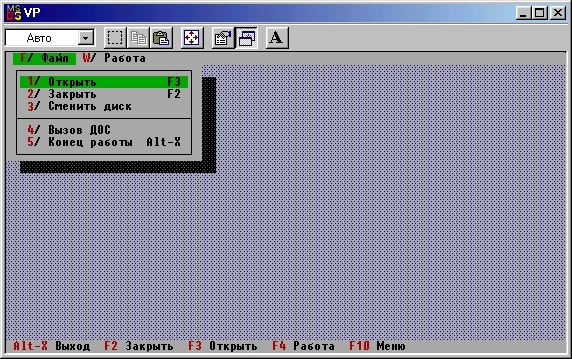

|
|
|
|
Формирование меню
Вернемся к смысловой части нашего примера и подумаем о том, какие еще свойства следует придать программе. Поскольку мы предполагаем работу с файлом, можно включить в программу код, реализующий строку меню с опцией «Файл», связав с этой опцией такие действия, как открытие уже существующего файла данных и/или создание нового. Здесь же можно предусмотреть возможность альтернативного выхода из программы. Кроме того, в главное меню следует поместить еще одну опцию, назовем ее «Работа». Эта опция должна открыть доступ к содержательной части программы. С учетом сказанного программу нужно дополнить следующими строками:
const
{Команды для обработчиков событий:}
cmWork = 203; {Обработать данные}
cmDOS = 204; {Временно выйти в ДОС}
WinComl: TCommandSet = [cmSave,cmWork]; {Множество временно недоступных команд}
Эти строки следует вставить сразу после предложения Uses; они определяют коды команд, которые будут затем использоваться для вызова соответствующих частей программы. Кроме того, объявление объекта TNotebook нужно дополнить строкой
type
TNotebook = object (TApplication)
.......
Procedure InitMenuBar; Virtual; {Перекрываем стандартный метод InitMenuBar}
end;
в которой перекрывается прежний метод InitMenuBar, ответственный за формирование строки меню. И, наконец, в разделе объявлений программы следует поместить описание метода InitMenuBar и видоизменить описание метода InitStatusLine:
Procedure TNotebook.Ini tMenuBar;
{Создание верхнего меню}
var
R: TRect;
begin
GetExtent (R) ;
R.B.Y := succ(R.A.Y) ; {R - координаты, строки меню}
MenuBar := New ( PMenuBar , Init(R, NewMenu ( {Создаем меню}
{Первый элемент нового меню представляет собой подменю (меню второго уровня) . Создаем его} NewSubMenu( '~F~/ Файл', hcNoContext,
{Описываем элемент главного меню}
NewMenu ( {Создаем подменю}
NewItem( {Первый элемент}
'~1~/ Открыть ', 'F3' , kbF3,cmOpen, hcNoContext,
NewItem( {Второй элемент}
'~2~/ Закрыть ', 'F2', kbF2, cmSave,hcNoContext,
NewItem( {Третий элемент}
'~3~/ Сменить диск' , ' ' , 0, cmChangeDir,hcNoContext,
NewLine ( {Строка-разделитель}
NewItem('~4~/ Вызов ДОС' , ' ' , 0, cmDOSShell,
hcNoContext,
NewItem('~5~/ Конец работы' , 'Alt-X' ,
kbAltX, cmQuit, hcNoContext,
NIL) ) ) ) ) ) {Нет других элементов подменю} ),
{Создаем второй элемент главного меню}
NewItem( '~W~/ Работа', ' ', kbF4, cmWork, hcNoContext,
NIL) {Нет других элементов главного меню} ))))
end; {TNotebook. InitMenuBar}
{---------}
Procedure TNotebook. InitStatusLine;
{Формирует строку статуса}
var
R: TRect; {Границы строки статуса}
begin
GetExtent (R,) ; {Получаем в R координаты всего экрана}
R.A.Y := pred(R.B.Y) ; StatusLine := New(PStatusLine,
Init(R, {Создаем строку статуса}
NewStatusDef (О, $FFFF, {Устанавливаем максимальный диапазон контекстной справочной службы}
NewStatusKey('~Alt-X~ Выход', kbAltX, cmQuit,
NewStatusKey('~F2~ Закрыть', kbF2, cmSave,
NewStatusKey('~F3~ Открыть', kbF3,cmOpen,
NewStatusKey('~F4~ Работа', kbF4,cmWork,
NewStatusKey('~F10~ Меню', kbF10,cmMenu, NUL))))),{Нет других клавиш}
NUL){Нет других определений}
));
DisableCommands(WinComl) {Запрещаем недоступные команды}
end; {TNotebook.InitStatusLine}
В новом варианте программы мы продвинулись дальше по пути конкретизации ее действий. Если Вы запустите программу и нажмете клавиши Alt-F (вызов опции «Файл» главного меню), на экране появится изображение, показанное на рис. 15,2.

Рис.15.2. Вид окна с развернутым меню опции Файл
Определение опций меню во многом напоминает определение командных клавиш в строке статуса. Отличие заключается лишь в том, что с любой опцией меню может быть при необходимости связана встроенная справочная служба. В нашей программе мы не используем эту возможность, для чего задаем стандартный идентификатор hcNoContext (нет контекстно-зависимой справки) при описании каждой опции.
Подобно клавишам строки статуса командные клавиши меню выделяются символом «~». Заметим, что не имеет смысла назначать в качестве командных клавиш клавиши кириллицы, так как при их анализе Turbo Vision игнорирует коды 128...255. Если бы, например, мы задали в качестве командной клавиши для опции «Файл» клавишу «Ф», нажатие Alt-Ф не вызвало бы развертывания подменю, связанного с этой опцией (как и в Турбо Паскале, в Turbo Vision опции главного меню вызываются комбинацией А1t-<клавиша>, а опции меню нижнего уровня - просто нажатием нужной командной клавиши).
|
|
|
|